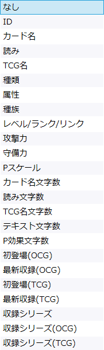

ソートウィンドウ
カードリストの上部に表示されるサーチバーにおいて、を押すと開くウィンドウです。
説明
要素をクリックすると説明が表示されます。ソート条件
原則として、各条件での並び順は『遊戯王マスターデュエル』での扱いに準拠します。

-
ID: カードID順に並びます。
- 実質的には「なし」にした場合と同じ動作です。
-
カード名: カード名の辞書順に並びます。
- OCG未発売カードはTCG(英語版)での名前がそのカード名として扱われます。
- 「記号類」→「数字」→「アルファベット」→「ひらがなカタカナ」→「漢字(音読み？)」
-
読み: カード名の「読み」の辞書順に並びます。
- OCG(日本語版)が未発売などで「読み」が空欄のカードは昇順でも降順でも末尾に置かれます。
- 「記号類」→「数字」→「アルファベット」→「ひらがなカタカナ」
-
公式データベースにおいて読みが記号や英数字で始まる場合、そのカードの位置は実際の読み方ではなく文字で決定されます。
- 《２人３脚ゾンビ》は発音すると「ににんさんきゃくぞんび」ですが、読みは「２にん３きゃくゾンビ」となっているため、そのソート位置は「に」の位置ではなく「数字」の位置(アルファベットより前)となります。
- 《『焔聖剣－アルマス』》の『は発音しない記号ですが、読みはこの記号も含む「『えんせいけん－アルマス』」となっているため、そのソート位置は「え」ではなく「記号類」の位置となります。
-
《Ulevo》など公式データベースで日本語設定でも英語版が表示されるカードについては、カード名がそのまま読みにも設定されているため、始めのほうに並びます。
- これらを除外したい場合、検索ウィンドウで「使用不可カード」を絞り込みから外してください。
-
TCG名: カード名の「TCG名」の辞書順に並びます。
- TCG(英語版)が未発売などで「TCG名」が空欄のカードは昇順でも降順でも末尾に置かれます。
- 「記号類」→「数字」→「アルファベット」
-
公式データベースにおいて英語名が記号や数字で始まる場合、そのカードの位置は実際の読み方ではなく文字で決定されます。
- 《"A" Cell Breeding Device》の"は発音しない記号ですが、英語名はこの記号も含むため、そのソート位置は「A」ではなく「記号類」の位置となります。
-
種類: カードの種類ごとに並びます。
- 「通常モンスター」→「ペンデュラム(P)通常モンスター」→「効果モンスター」→「P効果モンスター」→「儀式モンスター」→「P儀式モンスター」→「融合モンスター」→「P融合モンスター」→「シンクロ(S)モンスター」→「PSモンスター」→「エクシーズ(X)モンスター」→「PXモンスター」→「リンクモンスター」→「通常魔法」→「装備魔法」→「フィールド魔法」→「儀式魔法」→「永続魔法」→「速攻魔法」→「通常罠」→「カウンター罠」→「永続罠」
-
属性: モンスターの属性順に並びます。
- 魔法カードと罠カードは昇順でも降順でも末尾に置かれます。
- 「光属性」→「闇属性」→「水属性」→「炎属性」→「地属性」→「風属性」→「神属性」
-
種族: モンスターの種族順に並びます。
- 魔法カードと罠カードは昇順でも降順でも末尾に置かれます。
- 「魔法使い族」→「ドラゴン族」→「アンデット族」→「戦士族」→「獣戦士族」→「獣族」→「鳥獣族」→「機械族」→「悪魔族」→「天使族」→「昆虫族」→「恐竜族」→「爬虫類族」→「魚族」→「海竜族」→「水族」→「炎族」→「雷族」→「岩石族」→「植物族」→「サイキック族」→「幻竜族」→「サイバース族」→「幻想魔族」→「幻神獣族」→「創造神族」
-
レベル/ランク/リンク: その数値順に並びます。
- 魔法カードと罠カードは昇順でも降順でも末尾に置かれます。
- 例えばレベル3、ランク3、リンク3はいずれも同順扱いです。エクシーズとリンクを別扱いにはできません。
-
攻撃力: その数値順に並びます。
- 魔法カードと罠カードは昇順でも降順でも末尾に置かれます。
- 攻撃力「?」は-1扱いとなります。昇順にすると先頭にきます。
-
守備力: その数値順に並びます。
- 魔法カードと罠カードは昇順でも降順でも末尾に置かれます。
- 守備力「?」は-1扱いとなります。昇順にすると先頭にきます。
-
Pスケール: ペンデュラムスケールの数値順に並びます。
- ペンデュラムモンスター以外のカードは昇順でも降順でも末尾に置かれます。
-
カード名文字数: その文字数順に並びます。
- OCG未発売カードはTCG(英語版)での名前がそのカード名として扱われます。
-
読み文字数: その文字数順に並びます。
- 読みが空欄のカード(OCG未発売カード)は昇順でも降順でも末尾に置かれます。
-
TCG名文字数: その文字数順に並びます。
- TCG名が空欄のカード(TCG未発売カード)は昇順でも降順でも末尾に置かれます。
-
テキスト文字数: その文字数順に並びます。
- OCG未発売カードはTCG(英語版)でのテキストの長さがそのテキスト長として扱われます。そのため、ほとんどの日本語版カードよりも文字数は多い扱いになります。
-
P効果文字数: その文字数順に並びます。
- OCG未発売カードはTCG(英語版)でのテキストの長さがそのテキスト長として扱われます。
- ペンデュラムモンスター以外のカードは昇順でも降順でも末尾に置かれます。
-
初登場(OCG): OCG(日本語版)での初登場時期の順に並びます。
- OCG未発売カードは昇順でも降順でも末尾に置かれます。
-
最新収録(OCG): OCG(日本語版)で最も近い再録時期の順に並びます。
- OCG未発売カードは昇順でも降順でも末尾に置かれます。
-
初登場(TCG): TCG(英語版)での初登場時期の順に並びます。
- TCG未発売カードは昇順でも降順でも末尾に置かれます。
-
最新収録(TCG): TCG(英語版)で最も近い再録時期の順に並びます。
- TCG未発売カードは昇順でも降順でも末尾に置かれます。
- 収録シリーズ : 「収録シリーズ」の項目数順に並びます。OCGとTCGは合算されます。
- 収録シリーズ(OCG) : 「収録シリーズ」のうちOCGの項目数順に並びます。
- 収録シリーズ(TCG) : 「収録シリーズ」のうちTCGの項目数順に並びます。